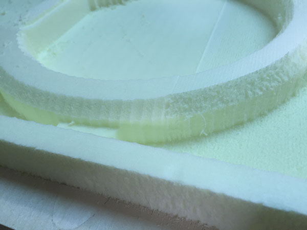
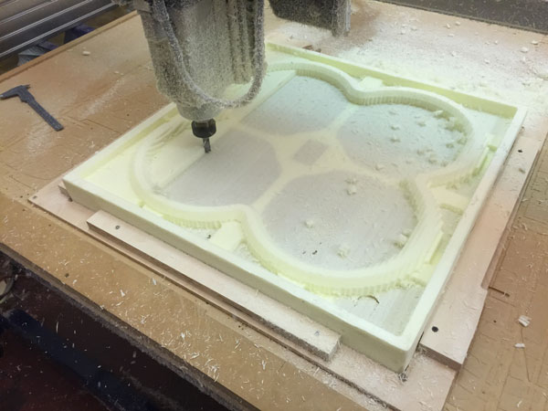
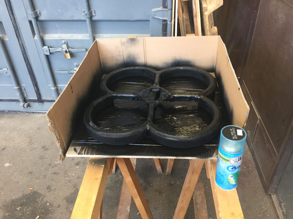

Final Project:The Protection Structure
To realize the protection structure I decided to use the polystyrene and mill both the front and the back to get a 3D object.
Then i started to draw in Rhino the structure, taking into account the distances to be kept by the propellers and the joints to secure it to the frame.
once finished, I exported the model as .stl before being milled.
First, I milled a square of 60x60 cm in a wooden panel, in order to have an accurate reference to be able to turn the piece of polystyrene during the milling process.
After that, I imported the .stl file into Partworks3D, set the dimension of the material and added the tab to keep the milled piece attached to the external material
Then I created the toolphat for roughing, using a half-inch tip
And the toolphat for finishing, using a quarter inch ball head tip
So in the end I obtained 4 toolpath: 1 for roughing and 1 finishing for the upper and 1 for roughing and 1 finishing for the lower part.
Once exported the toolpath and placed the piece of polystyrene in the space, I started milling, starting from roughing the bottom
Once finish the roughing i started with the bottom's finishing

Once finished with the bottom, i flipped the polystyrene piece and starting with the roughing of the top


and at last the finishing of the top
This is the final result of the structure after the milling process
After cleaning the piece, I used epoxy resin and a light fabric on the support arms, so as to give greater rigidity and resistance to the structure.
Once the resin has dried, I removed the parts of excess tissue
and after I started painting the structure, using a water-based paint so as not to melt the polystyrene
